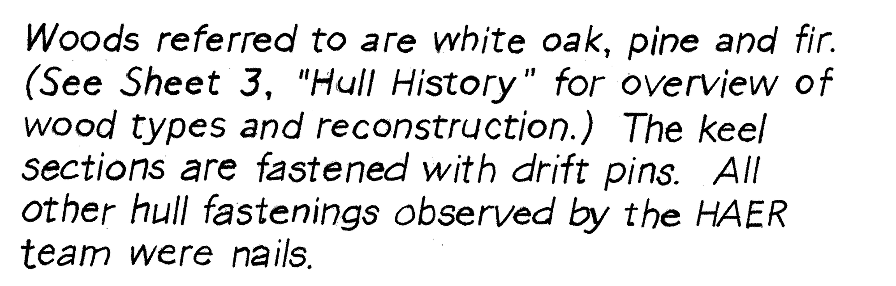

Original scan pixels: [10944, 8227, 13454, 9030]; source SHA-256: bb1d4a25c174f080601e9248d7445ea734ca6092790c4a931ddecf51de027cf3.
Native lossless view · Raw OCR · Word coordinates/confidence · Manifest

Drawing wood names refer to white oak, pine and fir. Keelson sections fastened with drift pins; all hull fastenings observed by the HAER team were nails.
Woods referred to are white oak, pine and fir. (See Sheet 3, "Hull History" for overview of wood types and reconstruction.) The keel sections are fastened with drift pins. All other hull fastenings observed by the HAER team were nails. |